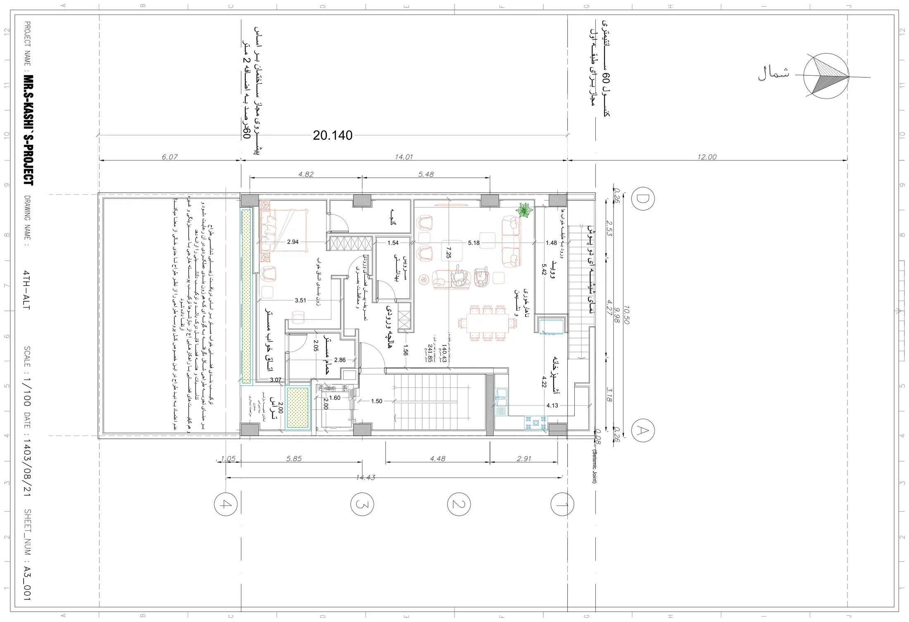

نقشه · طرح ۱۴۰۳
پلان طبقهٔ چهارم — نسخهٔ جایگزین
طبقهٔ چهارم (بالای دوبلکس اصلی)
{kind=link}

به چه نگاه کنیم
- برچسب «نمای شیشهای دو پوش» روی لبهٔ خیابان: پوستهٔ دوم شیشهای جلوی نشیمن.
- «ناهارخوری و نشیمن» ۷٫۲۵×۵٫۱۸ با میز هشتنفره و مبلهای نارنجی؛ تنها طبقهٔ ۱۴۰۳ که مبلمان دارد.
- «ووید» ۵٫۴۲ کنار «ورود به طبقهٔ خوابها» ۱٫۴۸: خالیای که پلهٔ داخلی از طبقهٔ سوم به آن میرسد.
- «آشپزخانه» ۴٫۲۲×۴٫۱۳ در گوشهٔ کنار خیابان با پیشخوان L شکل.
- «هالچهٔ ورودی» با یادداشت «تعریف پیشفضای ورودی و محافظت بصری» و «سرویس بهداشتی» ۱٫۵۴ کنارش.
- «اتاق خواب مستر» ۲٫۹۴×۳٫۰۷ با «زونبندی اتاق خواب» ۳٫۵۱، «حمام مستر» ۲٫۰۵×۲٫۸۶ و «گنجه».
- «تراس» ۲٫۰۰×۲٫۰۰ کنار آسانسور با یادداشت «امکان تعبیهٔ بازشو به تراس بدون مزاحمت دیداری» و باغچهٔ نقطهچین کنار آن.
- نوار باغچه در لبهٔ حیاط و برچسب مساحت «در طبقه: ۱۴۰٫۴۳ / در کل: ۲۴۱٫۸۵» — رقم طبقه از طبقهٔ سوم تکرار شده.
- پاراگراف بلند معمار در حاشیهٔ حیاط و شمارهٔ برگه A3_001 در کادر عنوان.
فضاها
ناهارخوری و نشیمن، آشپزخانه، ووید، ورود به طبقهٔ خوابها، هالچهٔ ورودی، سرویس بهداشتی، اتاق خواب مستر، حمام مستر، گنجه، تراس، پلکان و آسانسور
یادداشت
این نسخهٔ جایگزین طبقهٔ چهارم (۱۴۰۳/۰۸/۲۱ در کادر عنوان) کاملترین برگهٔ ۱۴۰۳ است: نشیمن و آشپزخانهٔ دوبلکس اصلی، سوئیت مستر، تراس و پوستهٔ شیشهای دوم رو به خیابان که پاسخ معمار به سروصدا و تناقض پنجره است. حلنشده: بام باغ ترسیم نشده و دسترسی به بام فقط برای همین واحد است، برخلاف بند ۹؛ ووید و تراس همان ایدهای است که من نپذیرفتم. دو ناهماهنگی: برگه نسبت به برگههای دیگر آینهای است (محور D بالا و A پایین) و شمارهٔ A3_001 با برگهٔ زیرزمین یکی است. یادداشت حاشیه دفاع معمار از ترکیب سوئیت مستر است: زونبندی عملکردی، تناسبات خوانا، بازشوها و سبزینگی روی پوستهٔ بیرونی، به پشتوانهٔ تجربه و زیباییشناسی طراح؛ و این که به باور او بیاعتمادی به دید طراح، فرایند طراحی را تا حدی بیمعنا میکند. نام نقشه در کادر: 4TH-ALT.